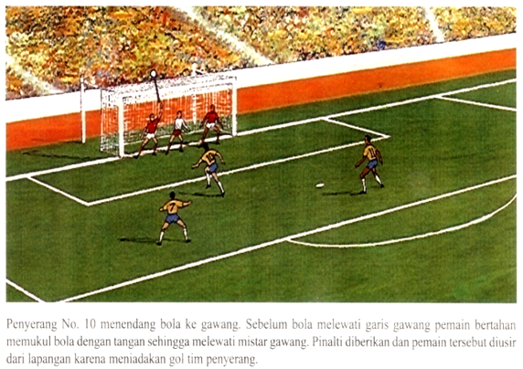
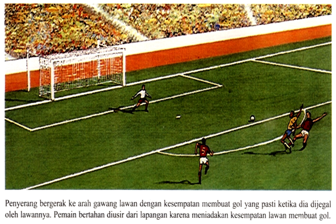
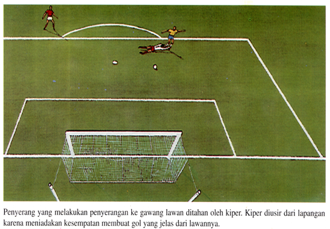
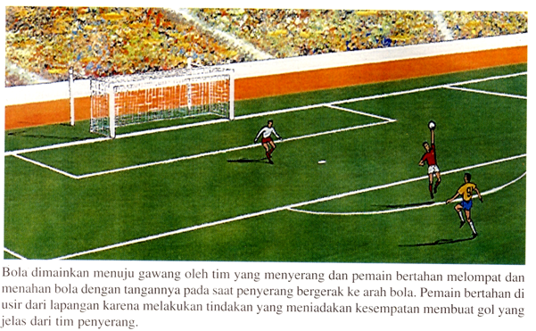
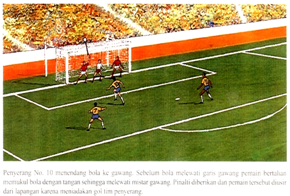
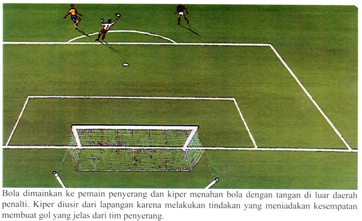

WASIT MEMPUNYAI KEWENANGAN MENJATUHKAN SANKSI DISIPLIN, SEJAK DIA MEMASUKI LAPANGAN PERMAINAN SAMPAI DIA MENINGGALKAN LAPANGAN SETELAH PELUIT TERAKHIR
TENDANGAN BEBAS LANGSUNG
- Pelanggaran Kaki
- MENENDANG LAWAN
- MENJEGAL LAWAN
- MENTACKLE LAWAN
- Pelanggaran Badan
- MELOMPAT KEARAH LAWAN
- MENABRAK LAWAN
- Pelanggaran Tangan
- MEMUKUL LAWAN
- MENDORONG LAWAN
- MEMEGANG LAWAN
- MEMEGANG bola (Excl PG)
- Pelanggaran Mulut
TENDANGAN BEBAS TIDAK LANGSUNG
- PENJAGA GAWANG (Pelangngaran Tangan)
- MENGUASAI BOLA > 6 DETIK
- MENYENTUH BOLA KEMBALI SETELAH DILEPASKAN DARI TANGAN NYA
- MENGUASAI BOLA YANG SENGAJA DIBERIKAN OLEH TEMANNYA (BACK PASS)
- MENYENTUH BOLA LEMPARAN KE DALAM LANGSUNG DARI TEMAN SE TIMENYENTUH BOLA LEMPARAN KE DALAM LANGSUNG DARI TEMAN SE TIM
- PEMAIN
- BERMAIN DENGAN CARA BERBAHAYA
- MERINTANGI PERGERAKAN LAWAN
- MENGHALANGI PENJAGA GAWANG YG AKAN MELEPASKAN BOLA
- MELAKSANAKAN PELANGGARAN LAIN YANG TIDAK DIURAIKAN SEBELUMNYA DALAM PERATURAN 12.
DIHUKUM DENGAN CARA :
- TENDANGAN BEBAS LANGSUNG
- TENDANGAN BEBAS TIDAK LANGSUNG
- TENDANGAN PINALTI
WASIT MEMPUNYAI KEWENANGAN UNTUK MENJATUHKAN SANKSI DISIPLIN, DIMULAI SEJAK DIA MEMASUKI LAPANGAN PERMAINAN SAMPAI DIA MENINGGALKAN LAPANGAN PERMAINAN SETELAH PELUIT TERAKHIR
PENILAIAN DASAR SUATU PELANGGARAN
- DILAKUKAN OLEH PEMAIN
- TERJADI DI LAPANGAN PERMAINAN
- TERJADI PADA SAAT BOLA DALAM PERMAINAN
BILA SUATU PERMAINAN DIHENTIKAN KARENA ADA PENYERANGAN TERJADI DI LUAR LAPANGAN PERMAINAN (KETIKA BOLA SEDANG DALAM PERMAINAN), PERMAINAN DIMULAI KEMBALI DENGAN JATUHAN BOLA
ISYARAT WASIT
WASIT MEMPUNYAI KEWENANGAN MENJATUHKAN SANKSI DISIPLIN, SEJAK DIA MEMASUKI LAPANGAN PERMAINAN SAMPAI DIA MENINGGALKAN LAPANGAN SETELAH PELUIT TERAKHIR
DITUNJUKKAN DENGAN JELAS (CLEAR INDICATION)
- MENDEKAT DENGAN TENANG (CALM APPROACH)
- TIDAK ADA SERANGAN (NO AGGRESSION)
- PERLIHATKAN KARTU KEHADAPANNYA (CARD SHOWN TO PLAYERS FACE)
- SIKAP PENUH PERCAYA DIRI (CONFIDENT MANNER)
- TIDAK ADA PEMAIN LAIN (NO OTHER PLAYERS)
- JARAK YANG BAIK (GOOD DISTANCES)
HANYA PEMAIN DAN PEMAIN CADANGAN YANG DAPAT DIBERI :
- KARTU KUNING
- MENOLAK KEPUTUSAN WASIT DENGAN SIKAF, PERKATAAN ATAU TINDAKAN.
- BERKELAKUKAN TIDAK SPORTIF
- TERUS MENERUS MELANGGAR PERATURAN PERMAINAN
- MEMPERLAMBAT WAKTU MEMULAI KEMBALI PERMAINAN
- TIDAK BERADA PADA JARAK YANG DITENTUKAN
- MASUK/MASUK KEMBALI KE LAPANGAN TANPA IJIN WASIT
- SENGAJA MENINGGALKAN LAPANGAN PERMAINAN TANPA IJIN WASIT
- KARTU MERAH
- BERMAIN SANGAT KASAR
- BERKELAKUAN JAHAT/KASAR
- MELUDAHI LAWAN / ORANG LAIN
- MENGGAGALKAN PELUANG TERCIPTA NYA GOL BAGI TIM LAWAN, DENGAN CARA MEMEGANG/MENYEN TUH BOLA DENGAN TANGAN ( TERKE- CUALI PENJAGA GAWANG DIDALAM DAE-RAH HUKUMAN SENDIRI )
- MENGGAGALKAN PELUANG TERCIPTA NYA GOL OLEH PEMAIN LAWAN YANG BERGERAK MENUJU GAWANG PEMAIN TERSEBUT DENGAN CARA MELAKUKAN PELANGGARAN.
- MENGGUNAKAN KATA KATA,ISYARAT MENGHINA, MELECEHKAN
- MENERIMA PERINGATAN KEDUA DALAM PERTANDINGAN YANG SAMA.
PEMAIN PENGGANTI ATAU PEMAIN YANG TELAH DIGANTIKAN, YANG TELAH DIUSIR DENGAN MENUNJUKKAN KARTU MERAH, HARUS MENINGGALKAN LAPANGAN PERMAINAN / DAERAH TEKNIK (TECHNICAL AREA)
- KK DIBERIKAN, BUKAN KARTU MERAH JIKA PEMAIN TERBUKTI MENCOBA MENGHENTIKAN JALANNYA PERTANDINGAN DENGAN MELAKUKAN USAHA MURNI UNTUK MEREBUT BOLA
- TRIPLE PUNISHMENT ( PENALTI + KM + LARANGAN BERTANDING ) BAGI PEMAIN YANG MEMBUAT PELANGGARAN UNTUK MENGHALAU PELUANG BESAR MENCETAK GOL , TIDAK DIBERIKAN KM, TETAPI HANYA KK DAN PENALTI. TENDANGAN PENALTI MENGEMBALIKAN KESEMPATAN GOL YANG HILANG MELALUI DOGSO ( Denial of a Goal Scoring Oppurtunity )
- KM AKAN TETAP DIBERIKAN BILA PELANGGARAN TERSEBUT BERUPA MENYENTUH BOLA, MENARIK LAWAN ATAU MENDORONG PEMAIN LAWAN KETIKA SEDANG MEMAINKAN BOLA SERTA PELANGGARAN SERIUS.
BERKELAHI DILORONG
Wasit berhak memberikan KM kepada pemain yang terlibat perkelahian dilorong stadion sebelum kick off dimulai (pemain bisa diganti, jumlah satu adalah 11 orang)
PERINGATAN (CAUTION) / KARTU KUNING (YELLOW CARD)
DI USIR (SEND OFF) / KARTU MERAH (RED CARD)






CARELESS (KELALAIAN)
perbuatan kurang pertimbangan ketika melakukan challenge /hadangan dengan cara sembrono/ceroboh tanpa hati-hati
Sanksi : Tidak ada sanksi lebih lanjut
RECKLESS (KECURANGAN)
perbuatan yang tidak mengindahkan bahaya atau konsekwensi akibat yang dihadapi lawannya
Sanksi : Harus dihukum dengan KARTU KUNING
USING EXCESSIVE FORCE (MENGGUNAKAN TENAGA YANG BERLEBIH)
pemain telah mempergunakan tenaga yang jauh melebihi kekuatan yang diperlukan dan menempatkan lawan dalam posisi berbahaya
Sanksi : Harus dihukum dengan KARTU MERAH
TACKEL
TIDAK semua tackel dari belakang itu SALAH
Tackel untuk dapatkan bola
Tackel yang kena kaki sebelum bola "SALAH"
TENDANGAN BEBAS TIDAK LANGSUNG
- PENJAGA GAWANG MELAKUKAN PELANGGARAN :
- memegang Bola lebih dari 6 detik
- memegang Bola kali kedua setelah dilepaskan dalam permainan sebelum dimainkan oleh pemain lain (menyentuh bola dengan telapak tangannya, dianggap sedang menguasai bola)
- memegang Bola passing yang sengaja dilakukan oleh temannya
- memegang Bola dari LEMPARAN KEDALAM yang dilakukan oleh teman sendiri
- PEMAIN MELAKUKAN PELANGGARAN :
- Bermain dengan cara Berbahaya
- Halangi pergerakan lawan
- Halangi penjaga gawangmelepaskan bola
- Kesalahan lain (tidak disebut di atas) permainan diberhentikan untuk memberi peringatan atau perintah keluar pemain
KERTU KUNING UNTUK PERLAKUAN TIDAK SOPAN (UNSPORTING BEHAVIOUR)
- KETIKA BOLA DALAM PERMAINAN (menurut pendapat wasit, pemain melakukan) :
- Suatu Tipuan (trik) untuk mengelabui wasit
- Tindakan licik/pura-pura (simulation)
- Diving (menjatuhkan diri sendiri)
- KETIKA BOLA DALAM PERMAINAN :
- Merayakan suatu GOL yang tercipta dengan membuka baju, mengangkat sebahagian baju sehingga menutupi wajah, memakai topeng.
KARTU KUNING
DIPERGUNAKAN UNTUK MENGKOMUNIKASI KAN BAHWA :
- Seorang Pemain
- Pemain pengganti, atau
- Pemain yang sudah digantikan
Telah diberikan PERINGATAN
KARTU MERAH
DIPERGUNAKAN UNTUK MENGKOMUNIKASI KAN BAHWA :
- Seorang Pemain
- Pemain pengganti, atau
- Pemain yang sudah digantikan
Telah DIUSIR dari pertandingan
Hanya pemain, pemain pengganti atau pemain yang digantikan yang dapat dikenakan KARTU KUNING atau KARTU MERAH
PEMAIN HARUS DIBERI PERINGATAN, JIKA :
- MEMBUKA BAJU, MEMBUKA BAJU MELEWATI BAGIAN KEPALA, ATAU MENUTUPI KEPALA DENGAN BAJU NYA
- MENUTUPI KEPALA ATAU WAJAHNYA DENGAN TOPENG ATAU BENDA LAIN YANG SEJENIS
SENGAJA DAN TERANG-TERANGAN MEMEGANG BOLA
INSIDEN
Kartu Kuning/Merah diberikan tetapi permainan dimulai dengan Tendangan Bebas Tidak Langsung
Pemain melakukan pelanggaran baik didalam atau diluar lapangan terhadap orang lain selain daripada pemain pihak lawan (Teman/ Wasit/Asisten Wasit/ Ofisial/Pengurus/ Pelatih/ Penonton/orang lain)
PERANAN & TANGGUNGJAWAB MASYARAKAT SEPAKBOLA
- HORMATI PERATURAN
- HORMATI PEMAIN LAWAN
- JAGA KESELAMATAN PEMAIN, PEMAIN LAWAN & WASIT
- BANGGA DENGAN LIGA KITA
MINUM
- PEMAIN DIBERI HAK UNTUK MINUM PADA SAAT WASIT MENGHENTIKAN PERTANDINGAN DAN DILAKUKAN DIPINGGIR LAPANGAN SEBELAH DALAM GARIS SAMPING (TOUCH LINE)
- PEMAIN TIDAK BOLEH MEMBUANG/MELETAKKAN PLASTIK BEKAS TEMPAT MINUMAN ATAU TEMPAT AIR LAINNYA DI LAPANGAN PERTANDINGAN.
Para pemain bisa minta break minum air dalam kondisi cuaca yang sangat panas. Peraturan ini akan diuji coba ketika laga percobaan timnas Inggeris sebelum Euro 2016 dimulai
KEPUTUSAN DEWAN ASOSIASI SEPAKBOLA INTERNASIONAL
- PEMAIN YANG MELAKUKAN PELANGGARAN DAPAT DIBERI KARTU KUNING ATAU KARTU MERAH, BAIK ATAS PELANGGARAN YANG DILAKUKANNYA DI DALAM / DI LUAR LAPANGAN PERMAINAN TERHADAP LAWAN, TEMANNYA, WASIT, ASISTEN WASIT ATAU ORANG LAIN.
- KIPER DIANGGAP MENGUASAI BOLA BILA IA MENYENTUH BOLA DENGAN BAGIAN TELAPAK TANGANNYA TERMASUK KETIKA DENGAN SENGAJA MENANGKIS BOLA ( TERKECUALI MENURUT PENDAPAT WASIT, BOLA MEMANTUL DENGAN TIDAK SENGAJA DARI KIPER / MELAKUKAN PENYELAMATAN ).
- PEMAIN DAPAT MEMBERIKAN BOLA KEPADA KIPER SENDIRI DENGAN MENGGUNAKAN KEPALA ATAU DADA ATAU LUTUT DAN CARA LAIN. NAMUN BILA MENURUT PENDAPAT WASIT IA MELAKUKAN TIPUAN KETIKA BOLA DALAM PERMAINAN GUNA MENGHINDARI PERATURAN INI, PEMAIN DIANGGAP BERSALAH MELAKUKAN TINDAKAN TIDAK SPORTIF, PERMAINAN DIHENTIKAN DAN DIMULAI KEMBALI DENGAN TENDANGAN BEBAS TIDAK LANGSUNG UNTUK TIM LAWAN.
- PEMAIN MELAKUKAN TIPUAN KETIKA IA SEDANG MELAKUKAN TENDANGAN BEBAS, DIBERI PERINGATAN, TENDANGAN BEBAS DIULANG.
- TACKLE / PENYERANGAN YANG DAPAT MEMBAHAYAKAN KESELAMATAN LAWAN, DIBERI SANKSI SEBAGAI PELANGGARAN YANG SANGAT SERIUS.
- TINDAKAN LICIK / PURA-PURA (SIMULASI) DIMANAPUN DI DALAM LAPANGAN UNTUK MAKSUD MENIPU WASIT, DIBERI SANKSI SEBAGAI PERILAKU TIDAK SPORTIF
- PEMAIN YANG MEMBUKA KOSTUM UNTUK MERAYAKAN SUATU GOL YANG TERCIPTA, DIHUKUM SEBAGAI PERBUATAN TIDAK SPORTIF.
PENILAIAN DASAR SUATU PELANGGARAN
- DILAKUKAN OLEH PEMAIN
- TERJADI DI LAPANGAN PERMAINAN
- TERJADI PADA SAAT BOLA DALAM PERMAINAN
BILA SUATU PERMAINAN DIHENTIKAN KARENA ADA PENYERANGAN TERJADI DI LUAR LAPANGAN PERMAINAN ( KETIKA BOLA SEDANG DALAM PERMAINAN ) , PERMAINAN DIMULAI KEMBALI DENGAN JATUHAN BOLA
MENDORONG LAWAN
TINDAKAN MELAKUKAN BODY CHARGE / KONTAK PISIK ( BAHU VS.BAHU)
- BOLA DALAM JARAK PERMAINAN
- TIDAK MELAKUKAN KELALAIAN, KECURANGAN DAN
- TIDAK MENGGUNAKAN TENAGA BERLEBIHAN
MEMEGANG LAWAN
TINDAKAN UNTUK MENCEGAH LAWAN BERGERAK MUNDUR ATAU BERPUTAR DENGAN MENGGUNAKAN LENGAN ATAU BADAN
MENGHADAPI PEMAIN MEMEGANG LAWAN DI DEKAT ATAU DI DALAM PINALTI KETIKA TENDANGAN SUDUT ATAU TENDANGAN BEBAS
- BOLA BELUM DIMAINKAN
- MEMPERINGATKAN PEMAIN YG MEMEGANG LAWAN
- BERI PERINGATAN BILA DIA TERUS MEMEGANG LAWAN
- BOLA SUDAH DALAM PERMAINAN
- HENTIKAN PERMAINAN
- BERI KARTU KUNING
- BERI TENDANGAN BEBAS LANGSUNG ATAU PINALTI
- TENDANGAN PINALTI DIJATUHKAN ATAS PEMAIN BERTAHAN YANG MEMEGANG PENYERANG DI LUAR DAERAH PINALTI DAN BERLANJUT SAMPAI KE DALAM DAERAH PINALTI.
- KARTU KUNING DIBERIKAN UNTUK PERLAKUAN TIDAK SPORTIF MEMEGANG LAWAN YANG AKAN MENGUASAI BOLA
- KARTU MERAH DIBERIKAN UNTUK SUATU USAHA MENGGAGALKAN PELUANG MENCETAK GOL YANG NYATA DENGAN MEMEGANG LAWAN
MENYENTUH BOLA
PEMAIN DENGAN SENGAJA MENYENTUH BOLA DENGAN TANGAN / LENGAN NYA
PERTIMBANGAN WASIT ATAS PERBUATAN PEMAIN DALAM HAL MENYENTUH BOLA :
- GERAKAN TANGAN ( HAND BALL NOT BALL HAND )
- JARAK PEMAIN DENGAN BOLA ( BOLA YG TIDAK TERDUGA )
- POSISI TANGAN YANG BUKAN SEBAGAI PELANGGARAN
- MENYENTUH BOLA DENGAN BENDA DITANGAN
- MELEMPAR BENDA KE BOLA
KARTU KUNING DIBERIKAN UNTUK PERLAKUAN TIDAK SPORTIF MEMEGANG BOLA, KARENA :
- MENCEGAH LAWAN MENDAPATKAN POSISI
- MENCOBA MEMBUAT GOL DENGAN CARA MEMEGANG BOLA
KARTU MERAH DIBERIKAN UNTUK SUATU USAHA MENGGAGALKAN PELUANG MENCETAK GOL YANG NYATA DENGAN MEMEGANG BOLA
PELANGGARAN OLEH PENJAGA GAWANG
- PENJAGA GAWANG TIDAK BOLEH MENGONTROL BOLA DENGAN MEMEGANG NYA LEBIH DARI 6 DETIK
- BOLA DIANTARA TANGANNYA DENGAN PERMUKAAN APAPUN
- MEMEGANG BOLA DENGAN TANGAN TERBUKA YANG DIBENTANGKAN
- MEMBANTINGKAN KETANAH ATAU MELAMBUNGKAN KE UDARA
- PG TIDAK BOLEH MENYENTUH BOLA DENGAN TANGAN NYA DI DAERAH PINALTI, APABILA :
- MENYENTUH KEMBALI DENGAN TANGANNYA BOLA YANG TELAH SENGAJA DILEPASKAN DARI TANGANNYA ( TERKECUALI USAHA PENYELAMATAN ), PASS BALL, LEMPARAN KEDALAM DARI TEMAN SATU TIM NYA.
- DIANGGAP MENGONTROL BOLA, BILA MENYENTUH DENGAN BAGIAN MANAPUN DARI TANGANNYA ( UNTUK BOLA YG MUDAH DIKUASAI )
PELANGGARAN TERHADAP PENJAGA GAWANG
DILAKUKAN DENGAN CARA :
- MENGHALANGI PENJAGA GAWANG MELEPASKAN BOLA DARI TANGAN NYA
- BERBAHAYA, MENENDANG/COBA MENENDANG BOLA PADA SAAT AKAN DILEPAS (BOLA MASIH DITANGAN PG)
- MEMBATASI PERGERAKAN PG DENGAN CARA TIDAK FAIR (MISAL, PADA SAAT PELAKSANAAN TENDANGAN SUDUT)
BERMAIN DENGAN CARA BERBAHAYA (TBTL)
- USAHA MENDAPATKAN BOLA YG MENGANCAM AKAN MENCEDERAI SESEORANG (TERMASUK PEMAIN ITU SENDIRI)
- TIDAK ADA TERJADI KONTAK PISIK
- TENDANGAN MENGGUNTING / TENDANGAN BICYCLE, BOLEH BILA MENURUT WASIT, TIDAK BERBAHAYA BAGI LAWAN.
MENGHALANGI PERGERAKAN LAWAN
KETIKA BOLA TIDAK DALAM JARAK PERMAINAN, PEMAIN BERGERAK atau PINDAH KE ALUR DARI LAWAN UNTUK
- MENGHALANGI
- MEMBLOK
- MELAMBATKAN atau
- MEMAKSA PERUBAHAN ARAH DARI LAWAN
MENUNDA MEMULAI KEMBALI PERMAINAN UNTUK MENGELUARKAN KARTU
PERMAINAN TIDAK AKAN DIMULAI KEMBALI SAMPAI PEMBERIAN SANKSI TELAH DISELESAIKAN
PERILAKU TIDAK SPORTIF
- DENGAN CARA SEMBRONO MELAKUKAN SALAH SATU DARI TUJUH PELANGGARAN YANG DIKENAI TBL
- BERBUAT CURANG SEBAGAI TAKTIK UNTUK MENGGANGGU PELUANG TERCIPTANYA GOL BAGI LAWAN
- MEMEGANG :
- LAWAN UNTUK MENCEGAH LAWAN MENDAPATKAN BOLA
- BOLA UNTUK TAKTIK AGAR LAWAN TIDAK DAPAT MEMBANGUN SERANGAN
- BOLA UNTUK MENCETAK GOL
- COBA MENIPU WASIT ( BERSIMULASI - PURA-PURA CEDERA)
- BERGANTI TEMPAT DENGAN PG TANPA BERITAHU WASIT
- BERSIKAP KURANG RESPEK KEPADA PERTANDINGAN
- MEMAINKAN BOLA KETIKA BERJALAN HENDAK MENINGGALKAN LAPANGAN
- MENGGANGGU LAWAN SECARA LISAN SELAMA ATAU PD SAAT PERMAINAN AKAN DIMULAI
- DIAM-DIAM MEMBUAT TANDA YG TIDAK DIBENARKAN DI LAPANGAN PERMAINAN
- MELAKUKAN TIPUAN KETIKA AKAN MENGIRIMKAN BOLA DENGAN KEPALA, DADA, LUTUT DAN LAIN SEBAGAINYA KEPADA PG
- MELAKUKAN TIPUAN DENGAN MENGIRIM BOLA KEPADA PG
PERAYAAN TERCIPTANYA GOL
BOLEH :
- MENINGGALKAN LAPANGAN DAN SEGERA KEMBALI KELAPANGAN
- GERAKAN TARI YG WAJAR
TINDAKAN WASIT :
- MELAKUKAN TINDAKAN YG BERSIFAT MENCEGAH
TIDAK BOLEH :
- GERAKAN PROVOKASI, MEMANASI LAWAN ATAU MENGEJEK LAWAN - PENONTON
- MEMANJAT PAGAR PEMBATAS LAPANGAN
- MEMBUKA BAJU ATAU MENUTUPI KEPALANYA DGN BAJU
- MENUTUPI KEPALA, WAJAH NYA DGN TOPENG ATAU BENDA YG SEJENIS
TINDAKAN WASIT :
ADVANTAGE UNTUK PELANGGARAN PADA KESEMPATAN MEMBUAT GOL YANG NYATA
- JARAK ANTARA PELANGGARAN DENGAN GAWANG
- KEMUNGKINAN UNTUK MENGUASAI ATAU MENGONTROL BOLA
- ARAH PERMAINAN
- LOKASI JUMLAH PEMAIN BERTAHAN
- PENYERANGAN / PELANGGARAN YANG MENGHALANGI KESEMPATAN NYATA LAWAN MENCIPTAKAN GOL
SITUASI ADVANTAGE DIBERIKAN :
APABILA MENURUT WASIT :
DENGAN MENGHENTIKAN PERMAINAN AKAN MENGUNTUNGKAN BAGI PEMAIN TIM YANG MELAKUKAN PELANGGARAN